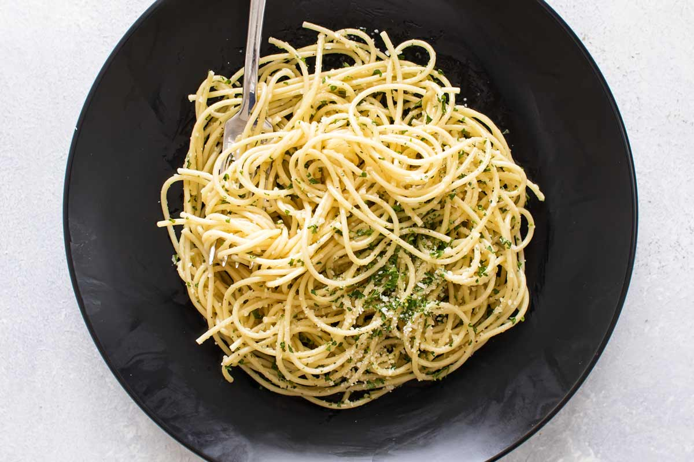

J-Meal

Description
Fast and easy to make, if one is not a gurmet
Time for preparation: 20 minutes
Ingredients
- Meat
- Pasta
- Spices (Salt, Pepper, Red Pepper)
- Oil
Steps
- Start making pasta by boiling salted water
- After putting the pot of water over heat chop the meat to desired size
- Put the meat in a pan with heated oil
- During searing the meat from both sides put salt, pepper and red peppers
- After the water boils add pasta to the pot. Meanwhile if the meat requires it, flip it
- When the pasta finishes cooking, the meat will also be ready